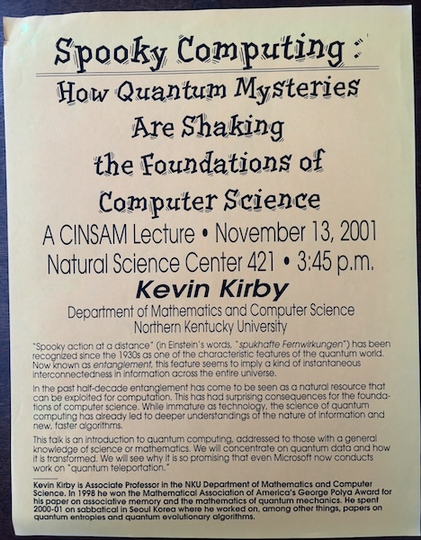

Quantum Computing: CINSAM Lecture
This is from a quarter century ago. The slide design is laughably moldy, the details need a few little fixes, and I now have better ways to teach it. But all of it is still core material in current QC courses. (And I still like my idea of a little person throwing a spear at the Bloch sphere to capture the idea of measurement....)

Top photo (K. Kirby): Hikkaduwa, Sri Lanka, 2026.